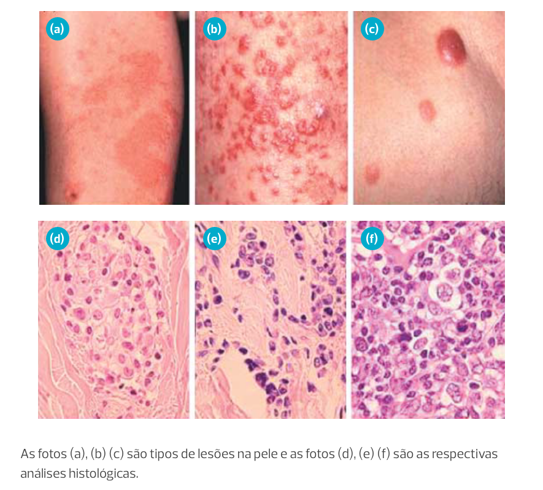

Módulo 1 | Aula 2
Doenças associadas ao HTLV-1 e coinfecções relevantes
Objetivos de aprendizagem
- Conhecer as principais manifestações clínicas associadas à infecção pelo HTLV-1.
- Conhecer os mecanismos patogênicos subjacentes às principais manifestações clínicas associadas à infecção pelo HTLV-1.
- Conhecer as coinfecções relevantes do HTLV-1 e com outros agentes infecciosos e seus diagnósticos.
Doenças Associadas ao HTLV-1
Embora muitas PvHTLV-1 permaneçam assintomáticas, a inflamação sistêmica induzida pelo vírus pode resultar em diversas manifestações clínicas. Entre elas, destacam-se as complicações neurológicas, dermatológicas, reumatológicas, pulmonares, oculares, intestinais, hematológicas e osteomusculares.
Como vimos na Aula 1, o HTLV-1 infecta principalmente os linfócitos T CD4+ integrando seu material genético ao DNA da célula hospedeira. Essa integração viral desencadeia uma ativação crônica dessas células, levando à produção contínua de citocinas inflamatórias e à proliferação celular.
Alterações imunológicas associadas à infecção pelo HTLV-1

Esta resposta inflamatória persistente pode causar danos em diversos tecidos e órgãos, resultando nas manifestações clínicas observadas.
Manifestações Neurológicas
A mielopatia associada ao HTLV-1 (HAM) é a principal complicação neurológica associada à infecção pelo HTLV-1, afetando significativamente a qualidade de vida dos pacientes.
Definida como uma doença crônica que provoca a inflamação e degeneração progressiva na medula espinal, a mielopatia tem início insidioso, porém, pode ter evolução mais rápida, levando à uma paralisia com espasticidade dos membros inferiores. Por isso tem também o nome de Paraparesia Espástica Tropical (TSP).
A HAM/TSP acomete de 1 a 5% das pessoas vivendo com HTLV-1 de forma heterogênea em diferentes populações. É mais prevalente em mulheres, geralmente na quarta e na quinta década de vida e está associada a um grau variável de disfunções esfincterianas, sobretudo vesical e sensitivas - estas menos frequentes, exceto pelas manifestações dolorosas.
Estima-se que dez a 50 entre 1000 pessoas com HTLV-1 podem desenvolver HAM/TSP, após décadas de infecção. Muitos fatores têm sido estudados até o momento, mas nenhum de fato se mostrou adequado para predizer esse desenvolvimento. Alguns indivíduos infectados pelo HTLV-1 podem apresentar formas mais atenuadas ou incompletas da HAM/TSP, muitas vezes com comprometimento de outros sistemas, como o sistema nervoso periférico e outros órgãos como pulmão, pele, mucosas, olhos, articulações, o que alguns autores têm configurado como uma doença inflamatória intermediária, entre os assintomáticos e os pacientes com HAM/TSP clássica.
As principais características da HAM/TSP
- Fraqueza ou rigidez dos membros inferiores - pode se apresentar unilateralmente no início, tornando-se bilateral com o passar do tempo e sendo também associada a uma hiperreflexia generalizada (reflexos aumentados) e respostas extensoras plantares.
- Disfunção vesical (espástica ou flácida)
- Disfunção intestinal
- Disfunção sexual
Estudos da história natural da doença indicam uma deterioração crônica progressiva das funções motoras, resultando na dependência de cadeira de rodas em 50% dos casos dentro de 20 anos após o início dos sintomas. A velocidade dessa progressão, no entanto, pode variar amplamente com vários indivíduos se mantendo estáveis por anos, enquanto uma minoria pode se tornar acamada rapidamente. A progressão é mais rápida em mulheres, especialmente antes da menopausa, o que pode ser indicativo da participação dos hormônios sexuais nesse processo. Outros fatores que podem influenciar nesse processo ainda não foram identificados, ainda que vários fatores de risco como carga proviral do HTLV e polimorfismos genéticos continuem sendo estudados.
Critérios para diagnóstico
Os critérios para o diagnóstico da HAM/TSP foram pela primeira vez estabelecidos pela Organização Mundial da Saúde (OMS) em 1989. Dentre esses critérios estava uma extensa lista de sinais e sintomas, assim como exames complementares como a busca de partículas do vírus no LCR para a exclusão de outras mielopatias não causadas pelo HTLV-1 e exames de imagem. Em 2006, um grupo de pesquisadores liderados por De Castro-Costa propuseram uma atualização nestes critérios. Veja a revisão:
- Paraparesia espástica progressiva não remissiva e incapacitante, suficiente para ser percebida pelo paciente.
- Sintomas sensitivos podem ou não estar presentes. Quando presentes, permanecem de forma sutil e sem nível sensitivo.
- Sinais ou sintomas dos esfíncteres anal e urinário podem ou não estar presentes.
- Presença de Anticorpos anti-HTLV-1 no soro ou líquor confirmado por western blot e/ou PCR positivo para HTLV-1 no sangue periférico e/ou líquor.
- Apresentação monossintomática: espasticidade ou hiperreflexia nos membros inferiores ou sinal de Babinski com ou sem sinais sensitivos leves ou bexiga neurogênica isolada confirmada por teste urodinâmico.
- Presença de Anticorpos anti-HTLV-1 no soro ou líquor confirmado por western blot e/ou PCR positivo para HTLV-1 no sangue periférico e/ou líquor.
- Exclusão de outras doenças que poderiam se assemelhar a HAM/TSP.
- Apresentação clínica completa ou incompleta.
- Presença de Anticorpos anti-HTLV-1 no soro ou líquor confirmado por western blot e/ou PCR positivo para HTLV-1 no sangue periférico e/ou líquor.
- Não exclusão de outras condições que se assemelham à HAM/TSP.
Essa atualização se baseou principalmente no status clínico dos pacientes, uma vez que alguns indivíduos, mesmo que sintomáticos, não preenchiam todos os critérios determinados pela OMS. Além disso, inclui aspectos clínicos associados ao início da doença, como distúrbios oligossintomáticos e testes laboratoriais adicionais como o Western Blot e a Reação em Cadeia da Polimerase (PCR).
Até o momento não há um tratamento específico estabelecido contra o HTLV-1. O que muitos autores advogam é o uso de drogas imunomoduladoras, ou controladoras da resposta imunológica, com efeito redutor da inflamação. Para a HAM/TSP, no início da doença, baseado na natureza inflamatória da doença, são utilizados corticoides.. Reabilitação física, medicação com efeitos funcionais e sintomáticos direcionados sobretudo à espasticidade, mobilidade, controle vesical, nutricional e dor são fundamentais como medidas de suporte e reintegração, em paralelo às intervenções modificadoras do curso clínico natural desta afecção.
Manifestações Dermatológicas
As principais manifestações cutâneas observadas em pacientes com HAM/TSP, assim como em indivíduos assintomáticos, incluem:
- xerodermia/ictiose adquirida,
- dermatofitoses (infecções fúngicas) e
- dermatite seborreica (conhecida popularmente como caspa).
A xerose, caracterizada pelo ressecamento da pele e descamação, é uma das manifestações cutâneas mais comuns em pacientes com HTLV-1. A ictiose adquirida, por sua vez, se caracteriza pela formação de escamas espessas e secas, principalmente nas extremidades. Essas alterações cutâneas podem ser explicadas, em parte, pela produção de substâncias inflamatórias pelos linfócitos infectados pelo vírus, que alteram a função das células da pele e levam a um processo de renovação celular anormal.
A dermatite infectiva associada ao HTLV-1 (DIH) é uma manifestação cutânea que pode ocorrer em pessoas que vivem com HTLV-1, frequentemente resultando em lesões inflamatórias na pele. Embora inicialmente descrita em crianças na Jamaica, está bem documentado que a doença também pode se manifestar em adultos. O quadro clínico é de dermatite exsudativa que afeta couro cabeludo, face, áreas retroauriculares, pescoço e áreas intertriginosas, como axila e virilha. Histologicamente apresenta dois padrões: uma dermatite perivascular superficial ou uma dermatite liquenoide. Essa condição pode se apresentar como erupções cutâneas pruriginosas, que favorecem infecções secundárias e comprometem a qualidade de vida do paciente. O manejo inclui o tratamento das infecções secundárias, além de cuidados específicos para controlar a inflamação e melhorar os sintomas cutâneos.
Manifestações dermatológicas da dermatite infectiva em adulto
Outras condições dermatológicas descritas são:
- eritema palmar persistente,
- escabiose,
- dermatite de contato,
- foliculite decalvante,
- vitiligo,
- herpes simples,
- fotossensibilidade,
- farmacodermia e
- calosidades plantares.
No ambulatório de HTLV do Instituto de Infectologia Emílio Ribas (IIER), 76% dos pacientes, tanto
assintomáticos quanto com HAM, foram diagnosticados com pelo menos uma doença cutânea durante o
exame.
A prevalência de doenças cutâneas entre pacientes com HAM/TSP alcançou 87%, sendo quase
40% maior em comparação com os assintomáticos. Essa alta prevalência de doenças de pele em PvHTLV-1,
independentemente do comprometimento neurológico, pode estar associada a mecanismos semelhantes aos
observados em infecções por outros vírus, como HIV e HCV.
• Leucemia/Linfoma de Células T do Adulto (ATLL)
A Leucemia/Linfoma de Células T do Adulto (ATLL) é uma neoplasia maligna das células T associada à infecção pelo HTLV-1. Como descrito anteriormente, este retrovírus infecta linfócitos T CD4+, integrando seu genoma no DNA do hospedeiro, o que pode levar à transformação celular e à proliferação descontrolada.
A proteína Tax, expressa pelo HTLV-1, desempenha um papel crucial na oncogênese, ativando vias de sinalização celular que promovem a sobrevivência e proliferação das células T infectadas, além de inibir mecanismos de reparo do DNA e apoptose, facilitando a acumulação de mutações genéticas.
O diagnóstico de ATLL baseia-se na combinação de critérios clínicos, laboratoriais e histopatológicos. Clinicamente, os pacientes podem apresentar linfadenopatia generalizada, hepatomegalia, esplenomegalia, lesões cutâneas, hipercalcemia e, em casos mais avançados, comprometimento multissistêmico. Laboratorialmente, a presença de células T anômalas no sangue periférico, conhecidas como flower cells é um indicativo importante, frequentemente associada à hipercalcemia.
Flower Cell em sangue periférico: Células com núcleo irregular, assemelhando-se a uma flor com várias pétalas

Classificação de ATLL
A classificação do ATLL é fundamental para o diagnóstico e direcionamento terapêutico. A classificação mais utilizada divide o ATLL em quatro subtipos: aguda, linfomatosa, crônica e smoldering. Veja como se manifesta alguns tipos de lesões:
Tipos de manifestação histopatológicas da ATLL
A análise histopatológica das lesões linfomatosas revela proliferação de linfócitos T anômalos, frequentemente com expressão de marcadores típicos das células T como CD2, CD3, CD4, e perda do CD7. A citometria de fluxo e a imunohistoquímica auxiliam na caracterização imunofenotípica das células malignas.
Classificada como diagnóstico de exclusão, apresenta um curso rápido com sobrevida média de 6 meses. A confirmação histológica das lesões neoplásicas é necessária para o diagnóstico quando o % de linfócitos anormais no sangue periférico for menor que 5%. ATLL tem predileção pelo sítio extranodal, portanto, a investigação deve ser realizada procurando acometimento em pele, principalmente quando há queixas de dores ósseas, fraturas ou aumento inexplicado de fosfatase alcalina, avaliação por tomografia computadorizada de pescoço, tórax, abdome e pelve no sentido de detectar lesões nodais e extra nodais além de infecções oportunistas. O mielograma e a biópsia de medula óssea não são necessários se o diagnóstico for realizado por citometria de fluxo do sangue periférico ou por biópsia de massa nodal ou de lesão em pele. 10-20% dos pacientes com ATLL apresentaram acometimento de sistema nervoso central, e se faz necessária avaliação do líquido cefalorraquidiano e incorporação de tratamento quimioterápico intratecal.
Curso rápido com sobrevida média de 10 meses. Presença de linfadenomegalia com lesão neoplásica. O PET (tomografia por emissão de pósitrons) é utilizado rotineiramente para determinar o estádio da ATLL, porém um resultado negativo não afasta comprometimento de órgãos, pois o seu significado ainda não é conhecido.
Tanto a forma aguda como a linfomatosa apresentam curso clínico agressivo e o tratamento precoce com quimioterapia deve ser instituído.
São divididas em dois grupos:
Forma desfavorável: Apresenta um curso rápido com sobrevida média de 15 meses e laboratorialmente deve apresentar pelo menos um dos seguintes critérios laboratoriais: Ureia e DHL > limite superior de referência, albumina sérica < que o limite inferior da referência.
Forma favorável: Apresenta um curso mais lento, taxa de sobrevida de quatro anos de 70% (são também classificados como ATL indolente juntamente com a própria forma smoldering).
Em ambos os grupos, o diagnóstico é confirmado com a análise histológica das lesões neoplásicas e quando o % de linfócitos anormais no sangue periférico for inferior a 5%.
Apresenta curso mais lento e taxa de sobrevida em quatro anos de 63%. O diagnóstico é realizado pela confirmação histológica das lesões neoplásicas na pele ou nos pulmões e quando a porcentagem de linfócitos anormais no sangue periférico for menor que 5%. Células em flor (flower cells) podem também ser observadas.
Tratamento da ATLL
O tratamento da ATLL varia conforme a forma clínica da doença, que pode ser classificada em quatro subtipos:
- aguda
- linfomatosa
- crônica
- lenta
As formas agudas e linfomatosa são mais agressivas e requerem tratamento intensivo. A quimioterapia combinada, utilizando esquemas como CHOP (ciclofosfamida, doxorrubicina, vincristina e prednisona), é frequentemente empregada, embora a resposta seja limitada e a taxa de recidiva seja alta. Além da quimioterapia, terapias direcionadas têm mostrado promissor resultado. O uso de zidovudina (AZT) combinado com interferon-alfa tem se mostrado eficaz em algumas formas de ATLL, particularmente nas fases iniciais e em pacientes com carga proviral baixa. A terapia antirretroviral visa reduzir a carga proviral e a replicação do HTLV-1, enquanto o interferon-alfa possui efeitos imunomoduladores e antiproliferativos.
Nos casos refratários ou recidivantes, o transplante de células-tronco hematopoiéticas pode ser considerado, oferecendo uma chance de cura a longo prazo. No entanto, esta abordagem é limitada pela toxicidade e pela disponibilidade de doadores compatíveis, além do elevado custo.
A ATLL representa um desafio significativo para profissionais de saúde devido à sua agressividade e complexidade. A compreensão aprofundada da patogênese, diagnóstico preciso e a implementação de estratégias terapêuticas adequadas são essenciais para melhorar o prognóstico dos pacientes.
• Manifestações Pulmonares
O tipo de envolvimento pulmonar varia conforme o estado clínico do paciente e as alterações imunológicas induzidas pelo vírus. Pacientes com ATLL apresentam um quadro de imunossupressão, tornando-os suscetíveis a infecções oportunistas, como aquelas por nematódeos como Strongyloides stercoralis e fungos como Pneumocystis jirovecii. Além disso, pode ocorrer infiltrado pulmonar por células leucêmicas. A investigação deve ser abrangente, incluindo tomografia computadorizada de tórax, broncoscopia com lavado broncoalveolar e biópsia transbrônquica, conforme avaliação específica de cada caso.
Em pacientes com doenças inflamatórias crônicas causadas pelo HTLV-1, frequentemente há danos pulmonares inflamatórios, como alveolite e bronquiolite.
As bronquiectasias são as lesões pulmonares mais bem caracterizadas que podem ser assintomáticas ou causar morbidade significativa, incluindo supuração crônica broncopulmonar e/ou hemoptise. A investigação envolve tomografia computadorizada de tórax e provas de função pulmonar. O tratamento conservador inclui o uso de medicamentos para sintomas gerais, como antiespasmódicos, antibióticos quando indicados, e fisioterapia respiratória. Intervenções cirúrgicas devem ser discutidas multidisciplinarmente.
• Manifestações Oculares
A uveíte associada ao HTLV-1 (HAU) é a manifestação ocular mais comum em pacientes infectados por esse vírus. Caracterizada por uma inflamação do olho, a HAU pode causar sintomas como vermelhidão, dor, visão embaçada e sensibilidade à luz. A inflamação pode acometer diferentes partes do olho, incluindo a íris, corpo ciliar e coroide, e pode levar a complicações como catarata, glaucoma e descolamento de retina. O diagnóstico da HAU é baseado em um exame oftalmológico completo, incluindo a avaliação do fundo do olho e na confirmação da infecção pelo HTLV-1 através de testes sorológicos.
Características de olhos de PVHTLV com uveíte ao exame oftalmológico
O diagnóstico de HAU inclui uma avaliação clínica detalhada e a exclusão de outras possíveis causas. Deve-se realizar sorologia para HTLV-1 em pacientes com uveítes idiopáticas, especialmente em áreas endêmicas.
Exames de imagem, como tomografia de coerência óptica (OCT) e angiografia fluoresceínica, podem ser úteis para avaliar a extensão do acometimento ocular. O manejo da HAU inclui o uso de corticosteroides tópicos ou sistêmicos para reduzir a inflamação ocular. Em casos mais graves, podem ser necessários imunossupressores. A identificação precoce e o tratamento adequado são essenciais para prevenir complicações e preservar a visão.
Além da uveíte, pacientes com ATLL podem desenvolver outras alterações oculares, como esclerite, caracterizada por inflamação das escleras. Essas manifestações exigem uma abordagem multidisciplinar para um manejo eficaz.
A correlação entre dano neurológico e pulmonar reforça o conceito do HTLV-1 como uma doença inflamatória sistêmica de evolução crônica.
Manifestações Reumatológicas
A associação entre o HTLV-1 e artropatia inflamatória crônica tem sido descrita em diversos estudos. Foram descritos casos de pacientes infectados pelo HTLV-1 com artropatia crônica caracterizada por proliferação sinovial e destruição significativa de ossos e cartilagens, inicialmente denominada como artropatia associada ao HTLV-1. Estudos posteriores demonstraram que essa condição é clínica e histologicamente indistinguível da artrite reumatoide.
Em uma região onde 30% dos habitantes são infectados pelo HTLV-1, Kato e colaboradores observaram uma prevalência significativamente maior de artrite reumatoide em pacientes soropositivos para HTLV-1 em comparação com a população soronegativa.
No Brasil, a prevalência de infecção pelo HTLV-1 em pacientes com artrite reumatoide foi de 7%, enquanto no grupo controle de doadores de sangue a positividade foi de 1,3%. No mesmo estudo, em um grupo de 33 pacientes com lúpus eritematoso sistêmico, não foi encontrado nenhum caso de sorologia positiva para HTLV-1/2.
O diagnóstico de artropatia associada ao HTLV-1 deve ser considerado em pacientes com artrite reumatoide, especialmente em áreas endêmicas para o vírus. O tratamento segue os mesmos princípios da artrite reumatoide, incluindo o uso de anti-inflamatórios, corticosteroides e imunossupressores. A intervenção precoce é crucial para evitar a progressão da doença e a destruição articular.
As manifestações reumatológicas associadas ao HTLV-1 representam um desafio diagnóstico e terapêutico significativo. Profissionais de saúde devem estar atentos a essa associação, especialmente em regiões endêmicas.
Manifestações Intestinais
Pacientes acometidos por doença neurológica com comprometimento da medula espinhal devido à infecção pelo HTLV-1 podem apresentar diversas manifestações urinárias e digestivas. No contexto intestinal, as principais ocorrências incluem:
- obstipação
- incontinência fecal
- redução da percepção de fezes ou gases no reto
Embora a bexiga neurogênica associada ao HTLV-1 seja uma condição bem estabelecida, o comprometimento do sistema digestivo nessa infecção ainda recebe pouca atenção.
Um estudo de corte transversal investigou as manifestações intestinais em 72 indivíduos infectados pelo HTLV-1 e em 72 controles soronegativos, revelando que 70% dos indivíduos com HAM/TSP relataram sintomas intestinais. Além disso, a presença de fezes endurecidas, sangramento anal e dor à defecação foi significativamente maior em pacientes com HAM/TSP em comparação aos controles soronegativos.
As PvHTLV que apresentam queixas de obstipação intestinal, fezes ressecadas e sangramento anal devem ser investigados para distúrbios intestinais associados ao vírus.
A identificação e o manejo adequado desses sintomas são essenciais para melhorar a qualidade de vida dos pacientes. O tratamento desses sintomas pode incluir o uso de medicamentos, para aliviar a obstipação. Além disso, o aconselhamento nutricional é crucial para promover uma dieta rica em fibras e adequada ingestão de líquidos, facilitando o trânsito intestinal e prevenindo complicações adicionais.
Coinfecção entre HTLV-1 e HTLV-2 e outras doenças infecciosas
A infecção pelo HTLV-1 pode aumentar a suscetibilidade a outras doenças infecciosas. Fatores biológicos e/ou socioambientais podem influenciar a coinfecção entre HTLV-1 e diversos patógenos.
Infecções relevantes associadas à infecção pelo HTLV-1
- Hepatites virais (HCV e HBV)
- Infecções sexualmente transmissíveis: Sífilis, Clamídia. HPV, HSV, HIV
- Mycobacterium tuberculosis e Mycobacterium leprae
- Schistosoma mansoni e Strongyloides stercoralis
- Escabiose (Sarna norueguesa)
- Infecções bacterianas recorrentes (dermatite infecciosa, infecção urinária)
Do ponto de vista biológico, o HTLV-1 compartilha vias de transmissão com diversos patógenos, como aqueles causadores de infecções sexualmente transmissíveis (ISTs) e doenças transmitidas através do sangue - como compartilhamento de agulhas e seringas contaminadas e transmissão vertical, da mãe para o filho. Além disso, o HTLV-1 induz alterações imunológicas no hospedeiro, com proliferação dos linfócitos T CD4+. Essas células são importantes para a resposta imune a celular. As alterações imunológicas podem aumentar a susceptibilidade da PvHTLV a outras infecções e até mesmo modificar a forma de sua apresentação clínica.
Determinantes sociais também são importantes na ocorrência de HTLV-1 e outras doenças infecciosas. No Brasil, o HTLV-1 está presente em todo o país, mas as regiões Norte e Nordeste são as de maior ocorrência. Muitas pessoas com PvHTLV moram em áreas mais pobres e têm um menor nível educacional e econômico.
Um outro ponto importante a ser considerado é que algumas doenças associadas ao HTLV-1, a exemplo da HAM/TSP são tratadas com corticoterapia a médio ou longo prazo e a imunossupressão pelo uso do corticoide pode agravar/exacerbar outras doenças infecciosas. Assim, é de fundamental importância fazer o diagnóstico precoce de possíveis infecções associadas ao HTLV-1.
Características das Coinfecções
• HTLV-1 e Hepatites virais
A coinfecção entre HTLV/HCV tem frequências variáveis de acordo com a localização geográfica. Em São Paulo, 5,3% dos indivíduos já infectados pelo HCV tinham HTLV, enquanto essa proporção foi de 7,5% no Rio de Janeiro. Em doadores de sangue da região de Ribeirão Preto-SP, o HCV foi detectado em 35,9% daqueles que testaram positivo para HTLV pela primeira vez. Na Bahia, um estudo avaliando 120 mil amostras do Laboratório Central (LACEN) em um período de 10 anos identificou 14% de coinfecção HTLV/HCV, o que equivale a 2,8 casos/100 mil habitantes.
Os casos de coinfecção HTLV/HCV predominaram em homens com média de idade de 59 anos. As maiores taxas foram encontradas em três microrregiões: Salvador, Ilhéus- Itabuna e Porto Seguro.
Em relação ao impacto da coinfecção no curso clínico do HCV, os estudos mostram resultados contraditórios. No Japão, um estudo com indivíduos coinfectados revelou cargas virais mais altas, progressão mais rápida para câncer hepático e resposta diminuída ao tratamento com interferon. Já no Brasil, estudos indicam um prognóstico mais favorável em indivíduos coinfectados que apresentavam níveis mais elevados de citocinas do tipo Th1 (IFN-gama, TNF) e linfócitos T CD4+, além de menor grau de fibrose hepática e níveis mais baixos de alanina aminotransferase (ALT).
Como a presença do HTLV pode impactar negativamente o curso da infecção pelo HCV, a vigilância dos casos ativos deve ser uma prioridade para proporcionar tratamento precoce.
A coinfecção entre HTLV-1 e vírus da hepatite B (HBV) tem sido detectada em menor prevalência que o HCV em estudos brasileiros. Um estudo realizado em São Paulo, em pacientes com HBV ou HCV detectou HTLV-1 ou HTLV-2 em 1,9% dos indivíduos infectados com HBV- (0,7% HTLV-1 e 1,2% HTLV-2) e em 4,0% (2,4% HTLV-1 e 1,6% HTLV-2) em indivíduos com HCV.
• HTLV e HIV
No Brasil, a distribuição geográfica da coinfecção por HTLV e HIV apresenta padrões distintos. Enquanto o HIV é mais prevalente nas regiões Sudeste e Sul, o HTLV concentra-se nas regiões Norte e Nordeste.
Estudos realizados em diferentes regiões do Brasil revelaram uma prevalência de coinfecção variando entre 1,5% e 5,0% entre pessoas vivendo com HIV. Fatores de risco como múltiplos parceiros sexuais, presença de outras ISTs, infecção pelo HCV e uso de drogas endovenosas estão associados à coinfecção. O uso de drogas injetáveis, em particular, é um fator de risco importante para a coinfecção por HIV e HTLV-2.
A coinfecção por HTLV-1 e HIV pode agravar o curso da doença, acelerando a progressão para AIDS. Embora os pacientes coinfectados apresentem contagens de CD4+ mais elevadas, a disfunção dessas células contribui para uma progressão mais rápida da doença. Por outro lado, a coinfecção por HTLV-2 pode, em alguns casos, retardar o desenvolvimento da AIDS.
O tratamento dos pacientes coinfectados com HTLV-1/HIV não difere dos esquemas recomendados e deve ser iniciado imediatamente após o diagnóstico confirmatório, independentemente das contagens de linfócitos T CD4+ ou da carga viral do HIV. Existem evidências de que a sobrevida dos pacientes coinfectados tratados é semelhante a dos monoinfectados pelo HIV.
• HTLV e Infecções sexualmente transmissíveis (ISTs)
A infecção pelo HTLV-1 está associada às práticas como sexo desprotegido, múltiplos parceiros, histórico de outras infecções sexualmente transmissíveis e relações sexuais com usuários de drogas injetáveis. Por esta razão, indivíduos infectados pelo HTLV-1 têm um risco muito maior de adquirir ISTs que indivíduos não infectados.
Em Salvador, Bahia, um dos raros estudos de base populacional mostrou que o HTLV-1 nesta cidade era transmitido principalmente por via sexual, com uma forte associação entre HTLV-1 e sífilis. Ainda nesta cidade, uma maior prevalência de infecção pelo Papilomavírus Humano (HPV) foi descrita em mulheres infectadas pelo HTLV-1 quando comparadas a mulheres não infectadas.
São necessários mais estudos para elucidar a relação entre a coinfecção HTLV-1/HPV e o risco de neoplasia intraepitelial cervical nas mulheres coinfectadas, uma vez que os estudos avaliando esta questão encontraram resultados diversos.
E continua importante reforçar o uso de preservativos para todas as PVHTLV, bem como a testagem dos parceiros sexuais. Especial atenção deve ser dada às mulheres em relação à triagem de infecção cervical para o HPV.
• HTLV e parasitoses
As parasitoses são consideradas infecções negligenciadas e estão associadas a condições precárias de saneamento. O HTLV-1 pode influenciar a persistência e a resposta ao tratamento de alguns desses parasitas, a exemplo de Strongyloides stercoralis, Schistosoma mansoni e o ácaro Sarcoptes scabiei, que causa a escabiose.
Em indivíduos infectados pelo HTLV-1 pode ocorrer estrongiloidíase disseminada, potencialmente fatal e com menor resposta ao tratamento, potencialmente fatais com menor resposta ao tratamento. Um estudo realizado em um Centro de referência para HTLV em Salvador, Bahia identificou uma frequência de 3,4% estrongiloidíase nos pacientes de área urbana enquanto essa proporção foi de 50% nos pacientes provenientes de áreas rurais. Pode ocorrer hiperinfecção, com o exame parasitológico apresentando milhares de larvas filariformes (cerca de 3 mil larvas por grama de fezes) e rabditiformes (cerca de 2 mil larvas por grama de fezes), além de fêmeas adultas de vida livre (cerca de 50 parasitas por grama de fezes) e ovos (cerca de 60 ovos por grama de fezes).
Assim, considerando a predisposição a formas graves, recomenda-se que pacientes infectados pelo HTLV-1 sejam avaliados para a presença de S. stercoralis através da sorologia específica e parasitológico de fezes com método Baermann e tratados imediatamente. Especialmente antes de iniciar tratamento com corticoterapia imunossupressora. Além disso, importante promover as melhorias de acesso aos serviços de saúde e ao saneamento básico.
Similarmente, tem sido descrito uma maior frequência de infecção pelo S. mansoni em indivíduos infectados pelo HTLV-1 em áreas endêmicas comparados a pessoas não infectadas por esse vírus - taxas de 8,4% para infectados por HTLV-1 e 1,8% para não infectados.
Foi descrito igualmente que a fibrose hepática foi leve em todos os pacientes coinfectados com HTLV-1 e que eficácia do tratamento com praziquantel foi menor em pacientes coinfectados do que em pacientes infectados apenas por S. mansoni.
Além dessas duas parasitoses, tem sido descrita uma forma de escabiose grave em pacientes com HTLV-1 denominada “sarna norueguesa” causada pelo ácaro S. scabiei. A sarna norueguesa é caracterizada pela presença de crostas descamativas de cor acinzentada que podem se desintegrar ao toque. É uma manifestação dermatológica rara, que afeta idosos e pacientes imunocomprometidos, por exemplo, com HIV-1. O diagnóstico pode ser feito através da biópsia de pele, através da visualização do S. scabiei. Tem sido sugerido que essa forma de escabiose pode ser um marcador de desenvolvimento das leucemias/linfoma de células T do adulto.
• HTLV e Tuberculose
Diversos estudos epidemiológicos realizados no Brasil demonstram uma clara associação entre a infecção pelo HTLV-1 e tuberculose, com prevalências de HTLV-1 em cerca de 8 a 10% em pacientes com tuberculose pulmonar.
Um estudo envolvendo uma coorte de 1711 pacientes e 4784 familiares em um centro de referência de HTLV em Salvador, na Bahia, avaliou a incidência de tuberculose durante um período de 10 anos, confirmando essa associação. O risco de ter tuberculose é quase 3 vezes maior no grupo infectado pelo HTLV-1 que em não infectados, especialmente em indivíduos com idade entre 31 e 50 anos. Em relação ao curso clínico da tuberculose pulmonar, um estudo indicou maior mortalidade em indivíduos com tuberculose e HTLV-1, de 25% em comparação com 8% de mortalidade de indivíduos com teste negativo para retrovírus. Mais recentemente, um estudo envolvendo pacientes com tuberculose ativa e HTLV-1 e pacientes apenas com tuberculose, não encontrou diferenças na carga bacteriana entre os grupos. Surpreendentemente, os resultados da baciloscopia de escarro tornaram-se negativos mais rapidamente nos pacientes com HTLV-1 do que nos controles. Porém, dois pacientes coinfectados foram a óbito. Assim, estudos para avaliar maior gravidade do curso clínico de tuberculose associada ao HTLV-1 ainda precisam ser conduzidos.
A maior susceptibilidade de PvHTLV à infecção pelo Mycobacterium tuberculosis, agente etiológico da tuberculose, poderia ser em parte explicada por alterações imunológicas. Células de indivíduos infectados pelo HTLV-1 têm uma menor resposta proliferativa quando estimuladas com antígenos microbacterianos e produzem menos citocinas inflamatórias em resposta aos antígenos, indicando um grau de imunossupressão.
Devido a maior susceptibilidade dos pacientes com HTLV-1 à tuberculose, recomenda-se que aqueles com tosse por mais de três semanas sejam avaliados para a presença da doença. O diagnóstico da tuberculose laboratorial deve ser feito pelo teste rápido molecular para tuberculose (TRM-TB) ou baciloscopia, cultura e teste de sensibilidade aos fármacos. Além do diagnóstico laboratorial, deve ser feita uma avaliação clínica e radiografia do tórax como um método complementar para esse diagnóstico. As sorologias para HTLV-1 e para HIV devem ser solicitadas para todos os pacientes com diagnóstico de tuberculose.
• HTLV e infecções bacterianas
Infecções bacterianas podem ocorrer em maior frequência em PVHTLV. Dentre elas destacam-se a dermatite infecciosa - lesões eritematosas-descamativas, que atingem o couro cabeludo, regiões retroauriculares, pescoço, face, axilas e virilhas. Frequentemente estas lesões estão infectadas com estreptococos beta-hemolíticos e Staphylococcus aureus e são pouco responsivas ao tratamento antimicrobiano.
Infecções urinárias são frequentes em pacientes com diagnóstico de disfunção urinária secundária à infecção pelo HTLV-1 (bexiga hiperativa ou arreflexa). Estes pacientes apresentam distúrbios esfincterianos que dificultam o correto esvaziamento da bexiga e favorecem a proliferação de bactérias e infecções do trato urinário. No entanto, a presença de bactérias na urina em pacientes assintomáticos (bacteriúria), não deve ser tratada com antibióticos.
Você chegou ao final da aula
Nessa aula, você conheceu as principais manifestações clínicas associadas à infecção pelo HTLV-1; os mecanismos patogênicos subjacentes as principais manifestações clínicas associadas à infecção pelo HTLV-1; e as coinfecções relevantes do HTLV-1 com outros agentes infecciosos e seus diagnósticos.

AUTORES: Augusto Penalva, Jorge Casseb e Maria Fernanda Rios Grassi